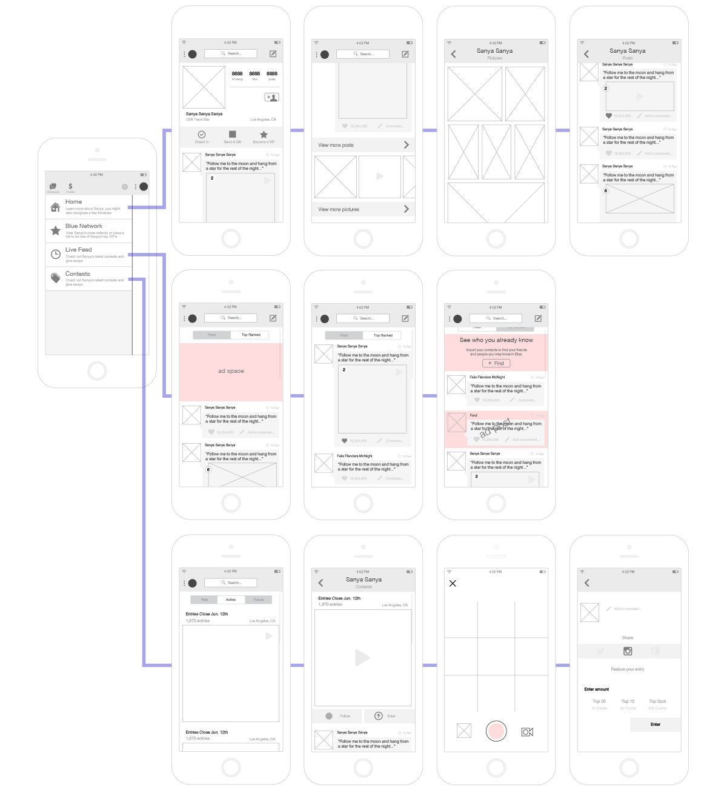
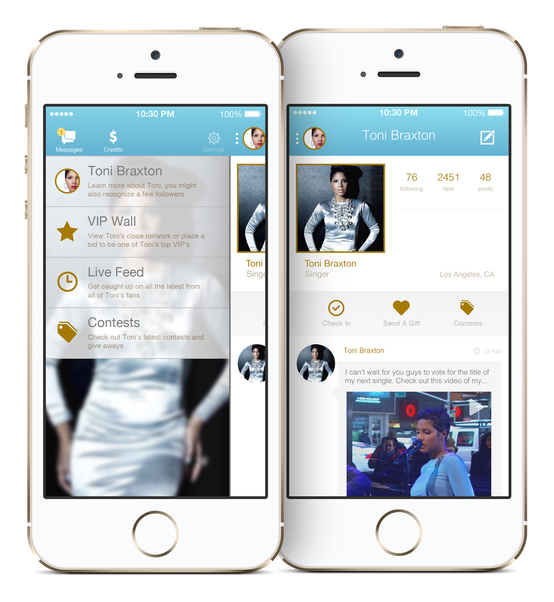

Sr. UX/UI Designer
Santa Monica, CA - 2014
Handmade Mobile provided celebrities and brands with their own social network, the artistic freedom to create posts comprised of video, audio, photo and text, and the power to control how fans viewed that content. The result was a social network that generated revenue, deepened engagement, and encouraged fans to grow their audience. Working in sync with open social media platforms, Handmade Mobile's enclosed social environment provided the privacy and intimacy needed to foster a connected fan community, while encouraging content sharing to open platforms like Facebook, Twitter and Instagram to continually grow their fan base.
UX Challenge
When I joined the Handmade team there were some interesting challenges with the apps they had going. There were a variety of options available to the users, some that worked, and others that didn't. I wanted to evolve the user flow to enhance the features that worked and slim down on the number of options available at any given time. Take a look below at what was handed over at my welcome meeting.
Structure and Flow
After several long meets with all team members, both individually and together, I structured something to enhance key features, then moved forward from there.

